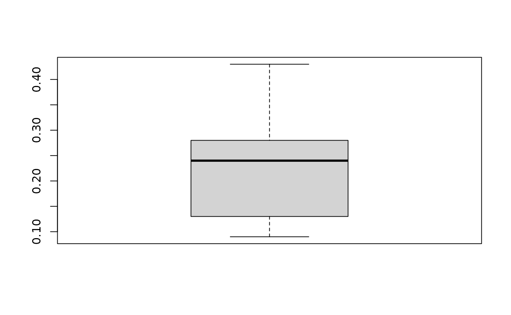

Data cleaning, solutions
RT
2022-05-18
Source:vignettes/data_cleaning_solutions.Rmd
data_cleaning_solutions.RmdBase R data cleaning
Sys.setlocale("LC_TIME", "English")
#> Warning in Sys.setlocale("LC_TIME", "English"): OS reports request to set locale
#> to "English" cannot be honored
#> [1] ""
messy_data <- read.delim("../inst/extdata/messy_data.txt", stringsAsFactors = F)
messy_data$Patient.id <- toupper(messy_data$Patient.id)
messy_data$Patient.id <- gsub("TCGA ", "TCGA_", messy_data$Patient.id)
messy_data <- messy_data[1:18,]
messy_data <- messy_data[,colnames(messy_data)!="X"]
summary(messy_data)
#> Patient.id Age Gender Date.of.birth
#> Length:18 Min. : 6.00 Length:18 Length:18
#> Class :character 1st Qu.:36.00 Class :character Class :character
#> Mode :character Median :46.00 Mode :character Mode :character
#> Mean :51.11
#> 3rd Qu.:65.00
#> Max. :96.00
#>
#> Date.of.diagnosis Date.of.surgery Status Survival
#> Length:18 Length:18 Length:18 Min. : 8.00
#> Class :character Class :character Class :character 1st Qu.:28.00
#> Mode :character Mode :character Mode :character Median :36.00
#> Mean :38.29
#> 3rd Qu.:53.00
#> Max. :64.00
#> NA's :1
#> Censor Time.of.death Identifier Classification
#> Min. :0.0000 Length:18 Min. : 49.0 Length:18
#> 1st Qu.:0.0000 Class :character 1st Qu.:603.2 Class :character
#> Median :0.0000 Mode :character Median :604.0 Mode :character
#> Mean :0.4706 Mean :518.7
#> 3rd Qu.:1.0000 3rd Qu.:604.0
#> Max. :1.0000 Max. :604.0
#> NA's :1
#> Histological.subtype enzyme.level MUC1 T
#> Length:18 Min. : 0.090 Length:18 Length:18
#> Class :character 1st Qu.: 0.135 Class :character Class :character
#> Mode :character Median : 0.240 Mode :character Mode :character
#> Mean : 38.213
#> 3rd Qu.: 0.310
#> Max. :684.000
#>
#> TNM
#> Length:18
#> Class :character
#> Mode :character
#>
#>
#>
#>
#help: https://www.stat.berkeley.edu/~s133/dates.html
messy_data$Date.of.surgery <- as.Date(messy_data$Date.of.surgery, format="%d-%b-%y")
messy_data$Date.of.birth <- as.Date(as.Date( messy_data$Date.of.birth, format="%d/%m/%Y"))
messy_data$Date.of.diagnosis <- as.Date(messy_data$Date.of.diagnosis, format="%d/%m/%Y")
messy_data$Time.of.death <- as.Date(messy_data$Time.of.death, format="%d-%b-%y")
Age <- difftime(messy_data$Date.of.diagnosis,messy_data$Date.of.birth, units = "days")
Age <- round(Age/365, digits = 0)
table(Age,messy_data$Age)
#>
#> Age 6 16 26 33 36 42 45 46 56 62 66 76 86 90 96
#> 16 0 1 0 0 0 0 0 0 0 0 0 0 0 0 0
#> 26 0 0 1 0 0 0 0 0 0 0 0 0 0 0 0
#> 33 0 0 0 1 0 0 0 0 0 0 0 0 0 0 0
#> 36 0 0 0 0 2 0 0 0 0 0 0 0 0 0 0
#> 42 0 0 0 0 0 1 0 0 0 0 0 0 0 0 0
#> 45 0 0 0 0 0 0 1 0 0 0 0 0 0 0 0
#> 46 0 0 0 0 0 0 0 2 0 0 0 0 0 0 0
#> 56 0 0 0 0 0 0 0 0 2 0 0 0 0 0 0
#> 62 0 0 0 0 0 0 0 0 0 1 0 0 0 0 0
#> 66 1 0 0 0 0 0 0 0 0 0 1 0 0 0 0
#> 76 0 0 0 0 0 0 0 0 0 0 0 1 0 0 0
#> 86 0 0 0 0 0 0 0 0 0 0 0 0 1 0 0
#> 90 0 0 0 0 0 0 0 0 0 0 0 0 0 1 0
#> 96 0 0 0 0 0 0 0 0 0 0 0 0 0 0 1
messy_data$Age <- Age
messy_data$Gender
#> [1] "m" "m" "m" "m" "m" "f" "f" "f" "f" "f" "f" "m" "m" "f" "f" "m" "f" "f"
messy_data$Status
#> [1] "dead" "alive" "alive" "alive" "dead" "dead" "alive" "dead" "dead"
#> [10] "dead" "alive" "alive" "alive" "alive" "dead" "alive" "dead" "dead"
table(messy_data$Status, messy_data$Censor)
#>
#> 0 1
#> alive 9 0
#> dead 0 8
messy_data$Identifier <- NULL
messy_data$Classification <- NULL
summary(messy_data$enzyme.level)
#> Min. 1st Qu. Median Mean 3rd Qu. Max.
#> 0.090 0.135 0.240 38.213 0.310 684.000
boxplot(messy_data$enzyme.level)
messy_data$enzyme.level[messy_data$enzyme.level>600] <- NA
boxplot(messy_data$enzyme.level)
table(messy_data$Histological.subtype)
#>
#> invasive MANEC mucinous NOS NOS
#> 1 1 2 9 1
#> NOS/papillary papillary
#> 3 1
messy_data$Histological.subtype <- gsub(" ", "", messy_data$Histological.subtype)
table(messy_data$Histological.subtype)
#>
#> invasive MANEC mucinous NOS NOS/papillary
#> 1 1 2 10 3
#> papillary
#> 1
table(messy_data$MUC1)
#>
#> ??? 0 0bis1 1 2 3
#> 1 10 1 1 3 1
messy_data$MUC1 <- factor(messy_data$MUC1, levels = c("0", "0bis1", "1", "2", "3"))
messy_data$N <- gsub("(T[[:digit:]])(N[[:digit:]])(M[[:digit:]])", "\\2", messy_data$TNM)
messy_data$M <- gsub("(T[[:digit:]])(N[[:digit:]])(M[[:digit:]])", "\\3", messy_data$TNM)
messy_data$TNM <- NULLData cleaning, tidyverse
library(tidyverse)
#> ── Attaching packages ─────────────────────────────────────── tidyverse 1.3.1 ──
#> ✔ ggplot2 3.3.6 ✔ purrr 0.3.4
#> ✔ tibble 3.1.7 ✔ dplyr 1.0.9
#> ✔ tidyr 1.2.0 ✔ stringr 1.4.0
#> ✔ readr 2.1.2 ✔ forcats 0.5.1
#> ── Conflicts ────────────────────────────────────────── tidyverse_conflicts() ──
#> ✖ dplyr::filter() masks stats::filter()
#> ✖ dplyr::lag() masks stats::lag()
library(readxl)
library(janitor)
#>
#> Attaching package: 'janitor'
#> The following objects are masked from 'package:stats':
#>
#> chisq.test, fisher.test
messy_data <- read_excel("../inst/extdata/messy_data.xlsx")
messy_data <- read_excel("../inst/extdata/messy_data.xlsx", n_max = 18)
messy_data <- messy_data %>%
select_all(~gsub(" ", ".", .)) %>%
clean_names() %>%
remove_empty( which = c("rows","cols"))
messy_data <- messy_data %>%
mutate(patient_id=toupper(patient_id)) %>%
mutate(patient_id=gsub(" ", "_", patient_id),
age=round(as.numeric((date_of_diagnosis-date_of_birth)/365), digits = 0),
N=substr(tnm, 3, 4),
M=substr(tnm, 5, 6),
tnm=NULL) %>%
mutate(enzyme_level=ifelse(enzyme_level>600, NA, enzyme_level))